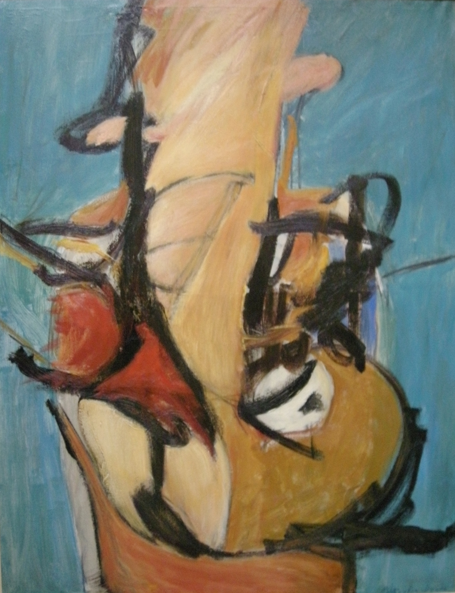

Teddy Millington-Drake
1932 – 1994
Artist Biography
Teddy Millington-Drake was born to a diplomat father and spent much of his childhood travelling. He attended Eton, studying art under Wilfred Blunt, and Oxford before living and painting in Venice and then Patmos, Greece. Millington-Drake in the 1960s worked in an abstract style apparently influenced by Jung, but achieved most fame as a watercolour landscape painter. India and the Middle East were favourite subjects and destinations. He showed widely in London and New York, notably at Lefevre, Hanover Gallery and Eyre & Hobhouse.

Composition 1962, 1962